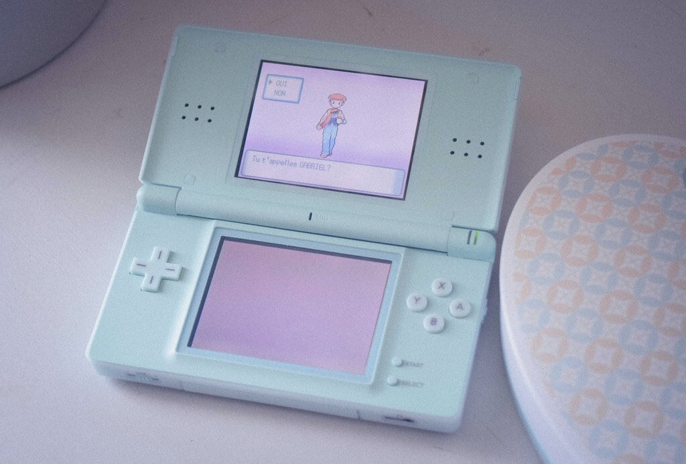

The Nintendo DS Systems
The Nintendo DS

The Nintendo DS is a foldable handheld game console produced by Nintendo, released globally across 2004 and 2005. The DS, an initialism for "Developers' System" or "Dual Screen", introduced distinctive new features to handheld games: two LCD screens working in tandem (the bottom one being a touchscreen), a built-in microphone and support for wireless connectivity. Both screens are encompassed within a clamshell design similar to the Game Boy Advance SP. The Nintendo DS also features the ability for multiple DS consoles to directly interact with each other over Wi-Fi within a short range without the need to connect to an existing wireless network. Alternatively, they could interact online using the now-defunct Nintendo Wi-Fi Connection service. Its main competitor was Sony's PlayStation Portable during the seventh generation of video game consoles.
The Nintendo 3DS
The Nintendo 3DS is a foldable handheld game console produced by Nintendo. The console was announced in March 2010 and unveiled at E3 2010 as the successor to the Nintendo DS. The system features backward compatibility with Nintendo DS video games.As an eighth-generation console, its primary competitor was Sony's PlayStation Vita.
The Nintendo 2DS
The Nintendo 2DS is a handheld game console produced by Nintendo. Announced in August 2013, the device was released in North America, Europe and Australia on October 12, 2013. The Nintendo 2DS is an entry-level version of the Nintendo 3DS which maintains otherwise identical hardware, similar functionality, and compatibility with software designed for the Nintendo DS and 3DS. However, the 2DS is differentiated by a new slate form factor rather than the clamshell design used by its precursors and by lacking the Nintendo 3DS's signature autostereoscopic 3D display.
The New Nintendo 2DS XL
Like the 2DS, the New 2DS XL lacks 3D functionality but otherwise has similar hardware to the New Nintendo 3DS. This includes a more powerful processor than the 2DS, an analog pointing stick, additional shoulder buttons, and built-in support for Amiibo use. Unlike the New 3DS, the New 2DS XL has its microphone and camera on the hinge, with its speakers located on the lower half of the device.
"Video games are meant to be just one thing. Fun. Fun for everyone."